Estante — auditoría de UI y propuestas
Auditoría hecha con agent-browser sobre localhost:3000 (móvil 390×844 y escritorio 1440×900), más cinco direcciones de diseño generadas en Stitch (proyecto 13081855326015627181).
1. Estado actual
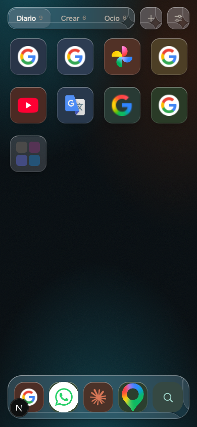
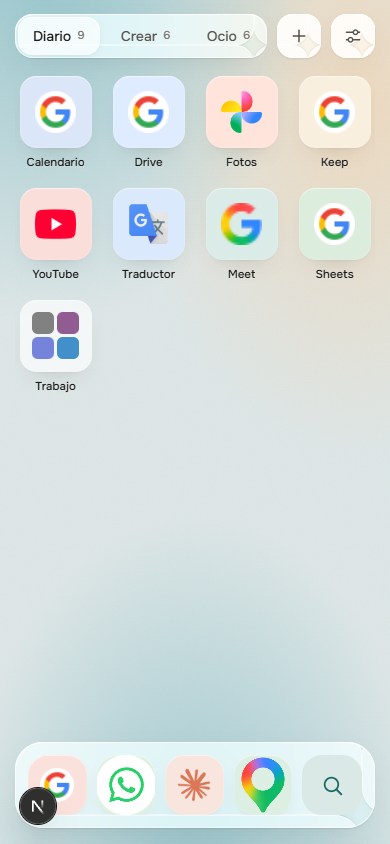
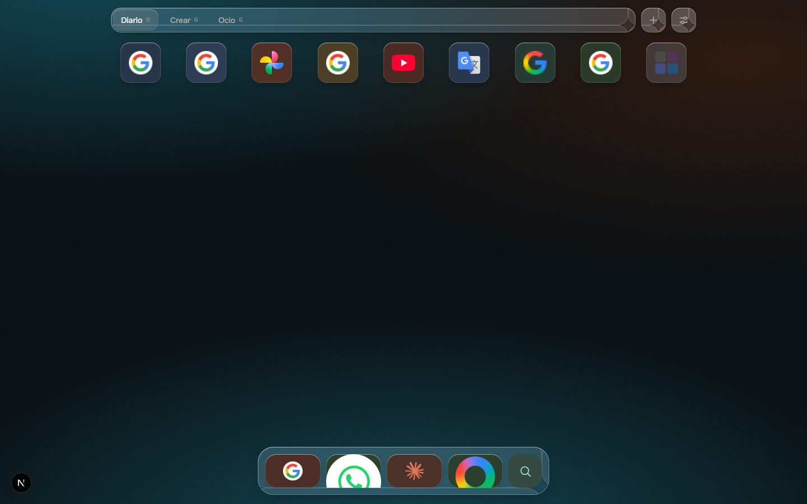
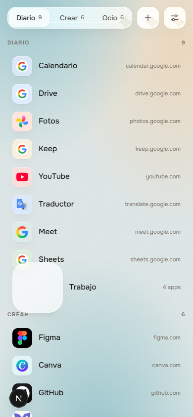
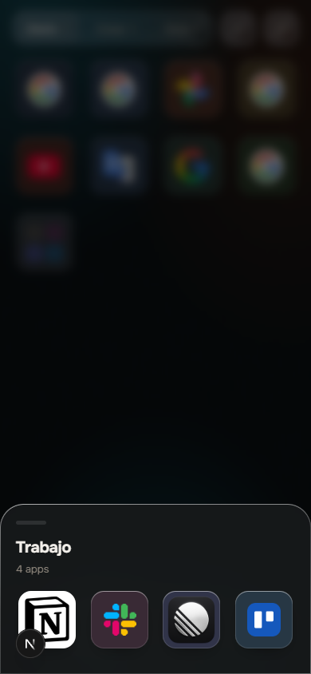
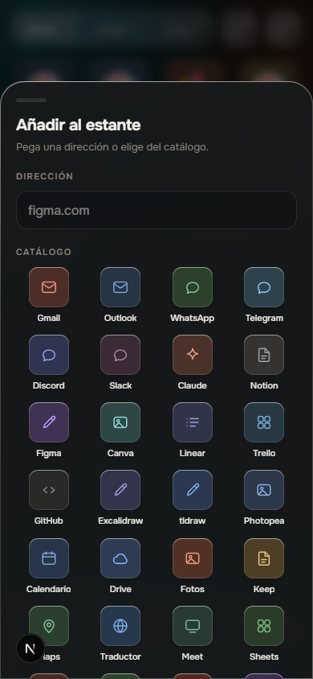
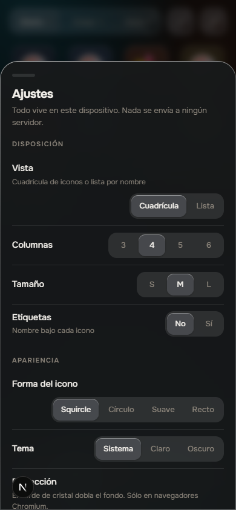
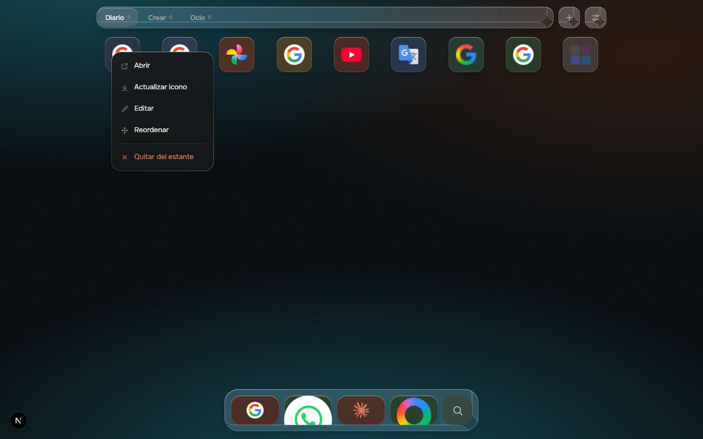
2. Hallazgos
| Sev. | Problema | Causa | Arreglo |
|---|---|---|---|
| Crítico | Calendario, Drive, Keep, Sheets y Gmail muestran la «G» genérica de Google. | Sin sesión, esos dominios redirigen a accounts.google.com; /api/icon lee el favicon del login (data:image/x-icon de 16 px). | Detectar redirección a un dominio de login y descartarla; tabla de iconos curada para servicios conocidos (Google Workspace, Microsoft) o Simple Icons/SVG oficiales en el catálogo. |
| Crítico | Etiquetas desactivadas por defecto: no se sabe qué es cada icono. | labels: "off" en defaults.ts; además los enlaces quedan sin nombre accesible. | Etiquetas activadas por defecto y aria-label siempre en la tesela. |
| Crítico | En escritorio el dock se deforma (WhatsApp y Maps recortados) y la cuadrícula ocupa una sola fila. | .dockrow .ico { width:100%; height:60px } con celdas flex:1; .shell limitado a 1080 px. | Iconos cuadrados de tamaño fijo en el dock; diseño de escritorio propio (barra lateral + cuadrícula ancha). |
| Alto | Esquinas «dobladas» y brillos raros en chips, botones y dock. | La capa .glass-refract (filtro SVG de backdrop) junto con .glass::after dibuja artefactos en las esquinas. | Refracción desactivada por defecto o eliminada; cristal limpio con blur y un borde de 1 px. |
| Alto | La carpeta en vista lista se rompe. | .ico.folder no recibe el tamaño de .row .ico (40 px). | Dar el mismo tamaño a .row .ico.folder y usar miniaturas reales. |
| Alto | La miniatura de carpeta son cuadrados de color, no los iconos que contiene. | Ico pinta <i> de color plano. | Mostrar 4 mini <img> de los iconos reales. |
| Alto | Navegación escondida: la búsqueda está en el dock y las páginas solo se cambian con chips o deslizando, sin indicador. | — | Búsqueda visible arriba o abajo como acción principal, indicador de página y «+ Nueva página» a la vista. |
| Medio | El catálogo de «Añadir» usa glifos genéricos. | CATALOG solo tiene glifo y color. | Logos reales, buscador y categorías. |
| Medio | Ajustes sobrecargados (segmentos que se parten en dos líneas, «Refracción»). | — | Agrupar en «Apariencia / Disposición / Datos» con una vista previa en vivo y ocultar lo técnico. |
| Medio | Accesibilidad: role="tab" sin tablist; el menú y las hojas cerradas siguen en el árbol accesible. | El menú se oculta con CSS y no con inert/hidden. | Usar tablist/tabpanel y inert en las capas cerradas. |
| Medio | Mucho espacio muerto en móvil: 9 apps ocupan un tercio de la pantalla. | — | Sumar «Recientes» y «Fijadas», o pasar a un diseño de colecciones a la vista. |
3. Propuestas (Stitch)
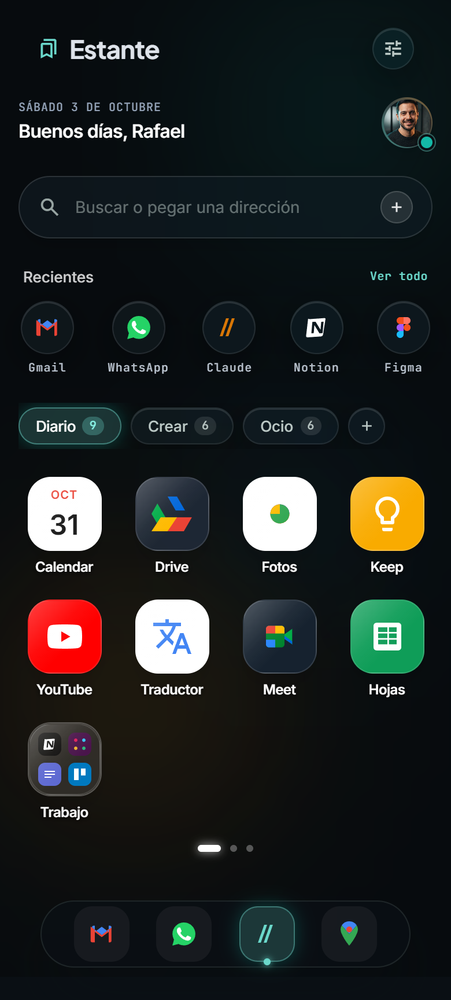
Evolución del diseño actual
- Mantiene la identidad Liquid Glass y la PWA tipo pantalla de inicio.
- Saludo, búsqueda arriba y «Recientes».
- Es el cambio de menor riesgo.
- Sigue dependiendo de páginas ocultas.
- El cristal cuesta rendimiento en Android de gama baja.
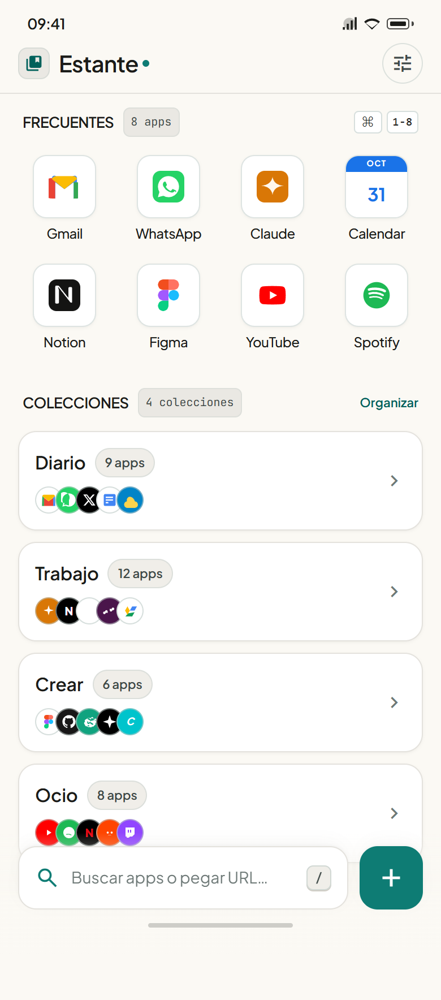
Lanzador al estilo Raycast
- Búsqueda abajo, al alcance del pulgar.
- «Frecuentes» y colecciones en lista, con todo a un toque.
- Claro y legible, sin efectos.
- Pierde la sensación de «pantalla de inicio».
- Las colecciones exigen un segundo toque.
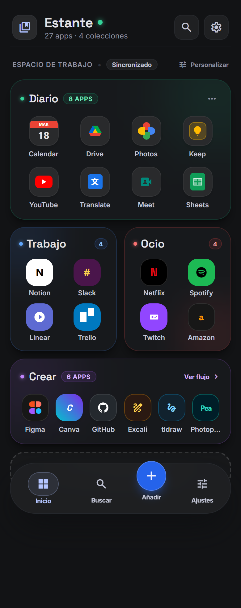
Todas las colecciones a la vista
- No hay páginas ocultas: todo se ve de un vistazo.
- Cada colección tiene color e identidad.
- Barra inferior clara (Inicio, Buscar, Añadir, Ajustes).
- Con muchas apps por colección necesita «Ver todo».
- Es la reestructuración mayor del
Doc.
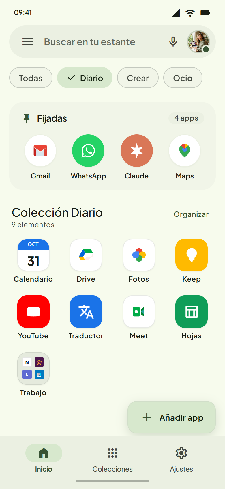
Nativo de Android
- Accesible, con objetivos táctiles grandes.
- Chips de filtro, «Fijadas» y FAB «Añadir app».
- Encaja con una PWA instalada en Android.
- En iOS se siente ajeno.
- Es la opción menos distintiva.
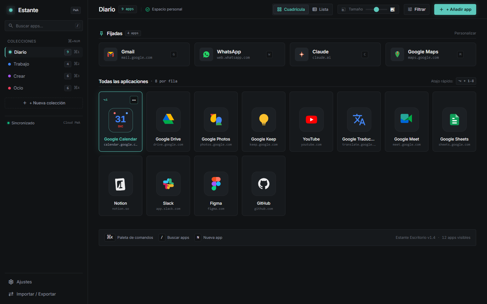
Diseño de escritorio (complementa a cualquiera)
- Barra lateral de colecciones al estilo Arc o Linear.
- Usa todo el ancho, con cuadrícula de 8 columnas y nombre y dominio en cada app.
- Atajos de teclado y menú «⋯» visible al pasar el ratón.
- Necesita un punto de quiebre propio (≥1024 px).
4. Recomendación
Primero, los arreglos de base (valen para cualquier propuesta): resolver los iconos de Google y las redirecciones de login, activar las etiquetas por defecto, arreglar el dock en escritorio y la carpeta en lista, y quitar los artefactos de la refracción.
Después, la dirección: C (Bento) en móvil más E (barra lateral) en escritorio. Ambas comparten el modelo «colecciones a la vista», que es lo que más mejora la navegación. Si prefieres conservar la estética actual, A sumando la búsqueda abajo de B es la alternativa conservadora.